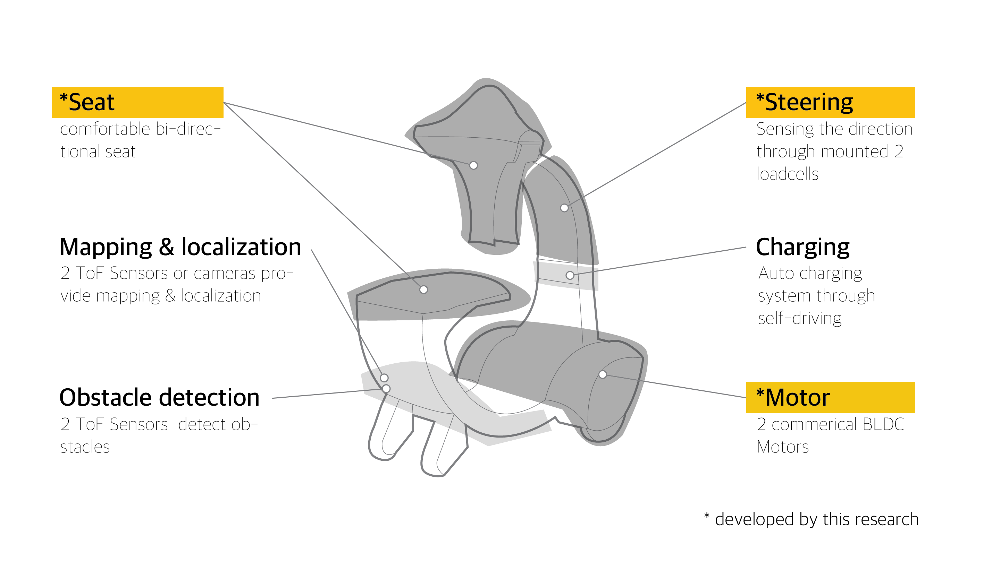

Keywords: PMVs, Personal Mobility Vehicles, Autonomous car, Sharing car
Publication: LEE, S.H. ICROS2019, Indoor Shared Smart Driving Mobility Development

Hug2Go is the indoor personal mobility, finding passenger through self-driving and going to place by a new way of steering. The mobility is intended to work corporately with people to improve the efficiency of time or energy indoor environment. Primarily, Hug2Go provides three types of operating mode. It usually requires self-driving for finding the passenger. Sometimes, it could be a comfortable chair. If a user wants to control the mobility, they are also able to operate the steering. Therefore, the switching is essential part among mode use. In order to discern between chair mode and control mode, we use sensors to detect a passenger’s position. Finally, we suggest “hug steering” as a new way of steering. We called it hug steering because a user needs to hug seat back to control the mobility. It might be a quite new steering system